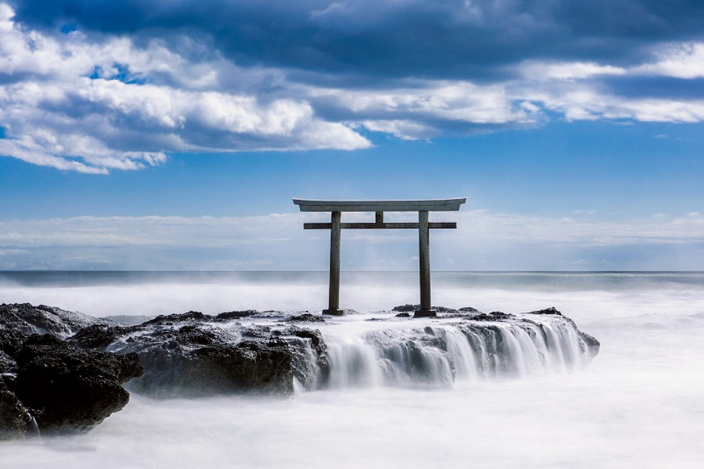
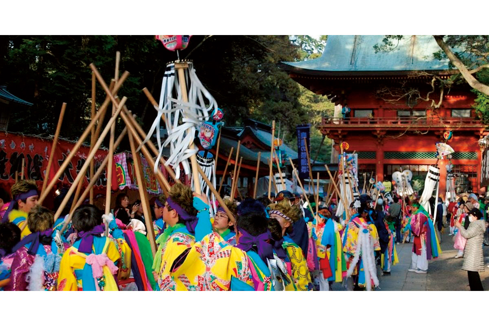
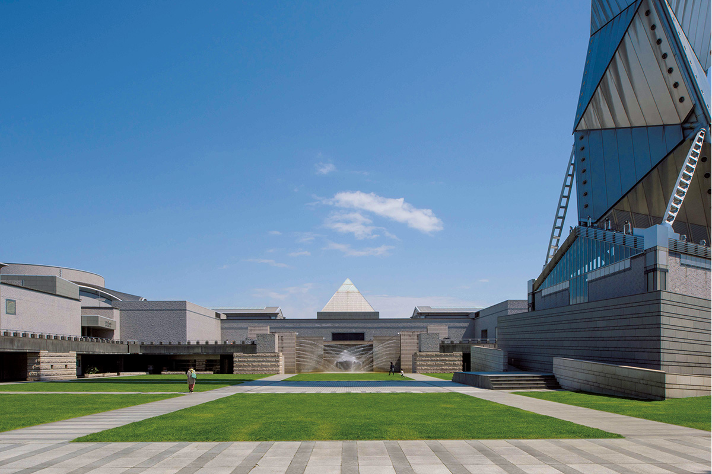
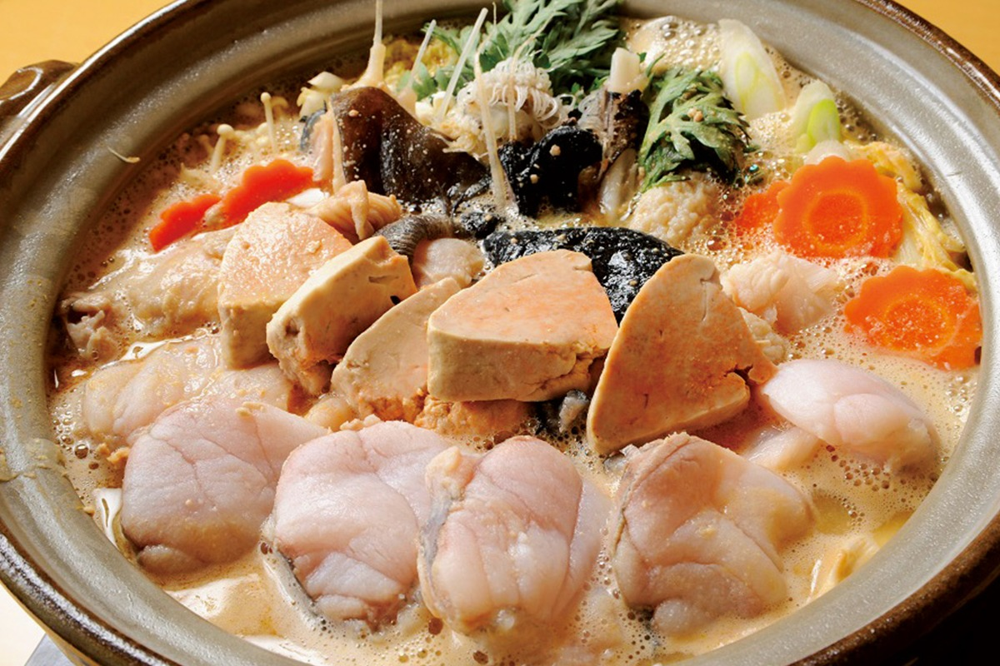
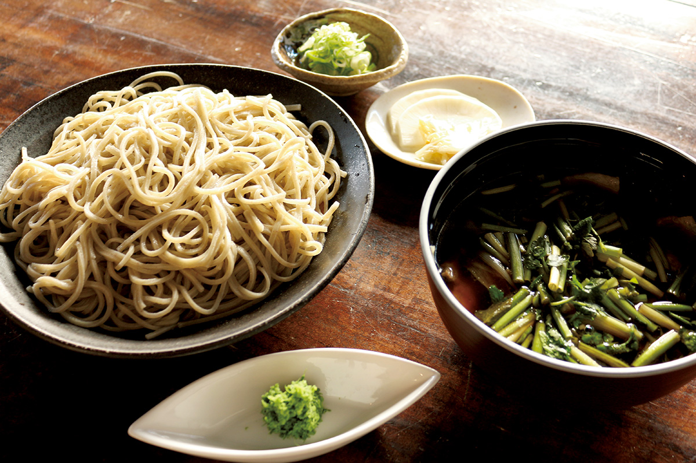
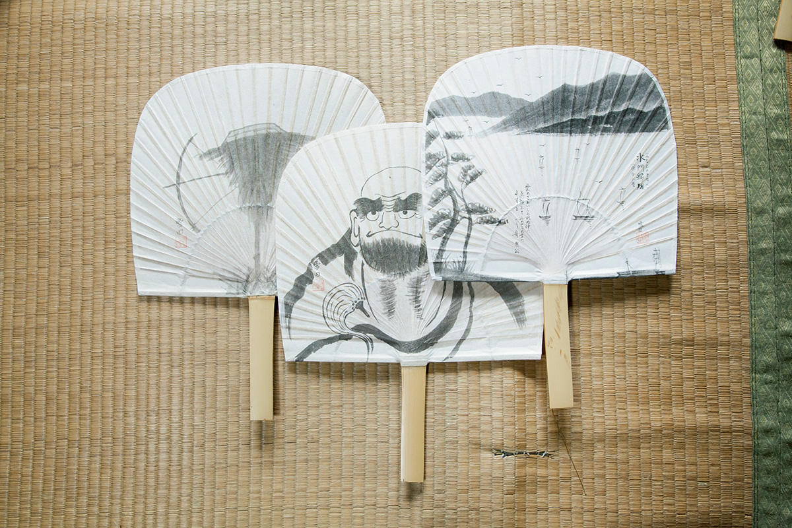
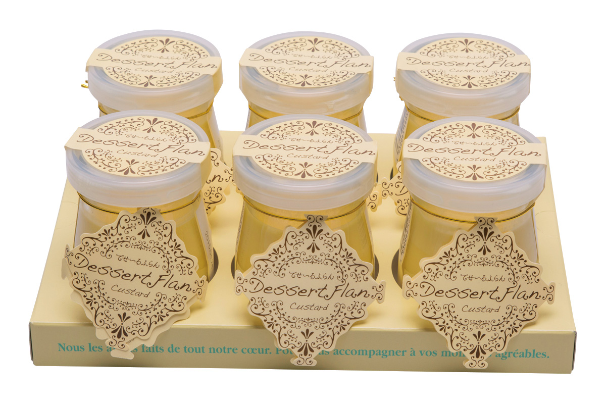

Префектура Ибараки
Ибараки: тории в прибое, искусство и осенняя гречневая лапша

Каменные ворота стоят на скале среди воды, волны обтекают камни белой пеной, над ними висит облачное небо.
Здесь ворота святилища стоят прямо в воде, в городе работает башня из металла и стекла, а гречневую лапшу варят из местной муки нового урожая. Рассказываем, за чем ехать в Ибараки.
О префектуре
Край, который в древности звали страной вечности
В древней книге «Хитати-фудоки», которую составили в VIII веке, про эти земли написано, что земля тут широкая, почва жирная, и с моря и гор хорошо берут дары, поэтому люди живут богато, как в стране вечности, то есть в раю. Отсюда и старое название Хитати, а слово «вечность» в тех записях как раз и передавало, как здесь было сытно.
В эпоху Эдо тут стояло княжество Мито из трёх домов рода Токугава, и край развивался как узел водных и сухопутных дорог рядом с Эдо. Со второго правителя, Мито Мицукуни, здесь начали составлять «Дайнихонси», большую историю Японии, и на этой работе выросла школа мысли Мито, которая сильно повлияла на умы конца эпохи Эдо. Из этих же мест вышел художник Ёкояма Тайкан.
Префектура богата местными продуктами, которые занимают первые места в стране по производству или улову: есть здесь и своя порода свиней «хитати-но кагаяки», и курица окукудзи-сямо. А ещё на базе хозяйств появилась первая в префектуре небольшая пивоварня, поэтому новые подходы к производству тут появляются в самых разных делах.
Что посмотреть
Ворота, которые стоят прямо в воде
Святилище Оараи-исосаки и ворота Камиисо
Святилище основали в 856 году, и его ворота тории стоят на скале прямо в море: по преданию, именно здесь боги спустились на землю. Считается, что вид на воду и небо лучший на рассвете, и им любовался Мито Мицукуни, второй правитель княжества.
- Адрес
- 6890 Isohama-cho, Oarai, Higashiibaraki, Ibaraki
- Телефон
- +81 29-267-2637
Что ещё посмотреть
- Водопад Фукуро, четырёхъярусный водопад, который называют водопадом четырёх времён года
- Святилище Касима-дзингу, одно из старейших святилищ востока страны
- Большой подвесной мост Рюдзин, самый длинный пешеходный подвесной мост префектуры
Праздники
Шествие с грохотом палок
Обряд Сайто-сай в святилище Касима-дзингу
Это весенний обряд святилища Касима-дзингу. Нарядные люди, которых зовут хаясибито, то есть музыкантами шествия, идут по дороге и то смыкают, то размыкают длинные дубовые палки, отмечая приход весны в этих краях.

- Период
- начало марта
- Место
- территория святилища Касима-дзингу и окрестности, город Касима
Другие праздники
- Праздник Мито Комон, летнее шествие в честь правителя Мито Мицукуни
- Праздник в Исиоке, шествие с повозками и музыкой
- Конкурс фейерверков в Цутиуре, общенациональный конкурс пиротехники
Музеи и архитектура
Башня из металла над площадью
Художественный центр Мито
Это целый культурный комплекс: концертный зал, театр и отдельное пространство для современного искусства. Здание спроектировал архитектор Исодзаки Арата, а над площадью поднимается металлическая спиральная башня высотой сто метров, которую видно со всего города.

- Адрес
- 1-6-8 Goken-cho, Mito, Ibaraki
- Телефон
- +81 29-227-8111
Что ещё посмотреть
- Станция Хитати, вокзал из стекла, который оформила архитектор Сэдзима Кадзуё
- Парк Кэйраку-эн и школу Кодокан, сад и школа княжества Мито, памятники просвещения
- Замок Усику, винодельня в старом замковом парке
Местная кухня
Рыба, у которой в дело идёт всё
Анко-набэ
В Японии говорят: «на востоке анкоу, на западе фугу», ставя эту рыбу рядом с самой знаменитой деликатесной рыбой западных префектур. Анкоу это удильщик, и в нём почти нет частей, которые выбрасывают: в горшок идут и мясо, и печень, и кожа. Это главное зимнее блюдо префектуры.

Что ещё попробовать
- Хитати-аки-соба, гречневая лапша из муки нового урожая
- Соборо-натто, натто, то есть ферментированные соевые бобы, с крошеным мясом
- Дон в Намегате, миска риса с местными продуктами
Где поесть
Столовая при старом заводе сакэ
«Накая»
Это столовая при главном доме старого завода сакэ «Киути», который работает с эпохи Эдо. Здание сложено в стиле складов, а на стол подают ароматную гречневую лапшу хитати-аки-соба и сезонные продукты из Хитати вместе с местным сакэ.

- Адрес
- 1257 Konosu, Naka, Ibaraki
- Телефон
- +81 29-270-7955
- Часы
- с 11:30 до 14:30, в субботу, воскресенье и праздники с 11:30 до 14:30 и с 17:30 до 20:00
- Выходные
- четверг
- Сайт
- nakaya.cc
Ремёсла
Веер, расписанный тушью
Веера утиуа мастерской Масуги
Начало этому промыслу положил художник-монах Сэссон эпохи Муромати, который расписывал веера тушью и раздавал их своим прихожанам. Здесь эту традицию держат до сих пор, и каждый веер делают вручную.

- Телефон
- +81 294-72-7159
Что привезти
Пудинг из местных яиц и пиво старого дома
Пудинг «Дэсээру фуран»
Этот десерт делают из яиц, выращенных в префектуре, и молока города Омитама. Он получается плотным и мягким одновременно, а продают его в баночках и наборами по несколько штук.

- Телефон
- +81 299-56-6991
- Сайт
- omitamayogurt.jp
Пиво «Хитатино несто»
Это пиво варит тот же старый завод сакэ «Киути», и оно известно далеко за пределами Японии. Название связано с гнездом, которое свил знаменитый японский аист, вернувшийся в эти края.
- Телефон
- +81 29-212-5111
- Сайт
- kodawari.cc
Где остановиться
Отель для тех, кто едет на велосипеде
Хосино ридзо BEB5 Цутиура
В 2020 году здесь открылся первый отель сети, придуманный для велосипедистов: он стоит прямо у станции Цутиура, где начинаются маршруты вокруг озера Касумигаура. Здесь можно взять велосипед напрокат, и остановиться разрешают не только гостям, приехавшим кататься.
- Адрес
- 3F PlayAtre Tsuchiura, 1-30 Ariake-cho, Tsuchiura, Ibaraki
- Телефон
- +81 570-073-022
- Комнат
- 90
- Цена
- от 6000 иен за ночь за номер, налоги и питание не включены
Местный диалект
Как здесь говорят «очень вкусно»
- ия, кооря умайнэочень вкусно
- кодзяппэ на кото бакка нукаситэндзя нээ ёне говори ерунды
- рэпōто агэтагэсдал работу
Рекорды
В чём Ибараки первая
- №1 производство дынь: первое место в стране
- №1 производство пива: первое место
- №1 размер большой статуи Будды в Усику: самый большой в стране
Вопросы и ответы
Что ещё спрашивают об Ибараки
Какой вокзал из стекла построили по проекту Сэдзима Кадзуё?
Станция Хитати на линии Дзёбан. В 2011 году здесь достроили новое здание вокзала, проект которого курировала Сэдзима Кадзуё, родившаяся в городе Хитати и известная во всём мире; из полностью стеклянного зала открывается вид на Тихий океан.
Какой водопад называют водопадом четырёх раз?
Водопад Фукуро. Когда-то сюда пришёл поэт-монах Сайгё, и, по преданию, он сказал, что настоящее очарование этих мест можно понять, только приехав сюда по разу в каждое время года. Водопад входит в три самых известных водопада Японии.
Справочник
Ибараки в цифрах
Общие сведения
| Административный центр | Мито |
| Муниципалитеты | 32 города, 10 посёлков, 2 деревни |
| Площадь | 6097 кв. км |
| Население | 2,88 млн человек |
| Плотность населения | 471,8 человека на кв. км |
| Туристов в год | 40,41 млн |
| Дерево префектуры | слива умэ |
| Цветок префектуры | роза |
| Птица префектуры | жаворонок хибари |
Климат
| Средняя температура | +15,3 |
| Максимум | +31,9 |
| Минимум | минус 2,4 |
| Осадки | 1283 мм |
| Ясных дней | 44 |
| Дождливых дней | 106 |
| Снежных дней | 10 |
Для путешественника
| Онсэнов | 35 |
| Гостиниц и рёканов | 941 |
| Музеев искусств | 17 |
| Музеев | 7 |
| Митиноэки, придорожных станций | 9 |
| Национальные сокровища | прямой меч в чёрных лаковых ножнах и другие |
| Важных культурных ценностей | 77, из них 2 национальных сокровища |
| Исторических мест | 33 |
| Живописных мест | 4 |
| Природных памятников | 8 |
| Национальные парки | Суйго-Цукуба, всего 1 |
Природные памятники
- Стрекоза хинума-итотонбо, редкая стрекоза болот
- Вишни у реки Сакурагава, старая роща вдоль берега
- Кедр у реки Ясуракава, огромное старое дерево
- Цикада в Катанива, место обитания редкого вида
- Кустарник у горы Ибуки, охраняемая роща редких деревьев